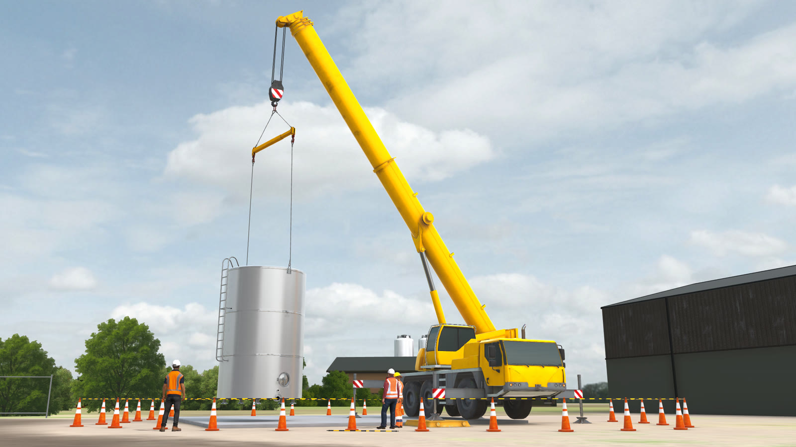
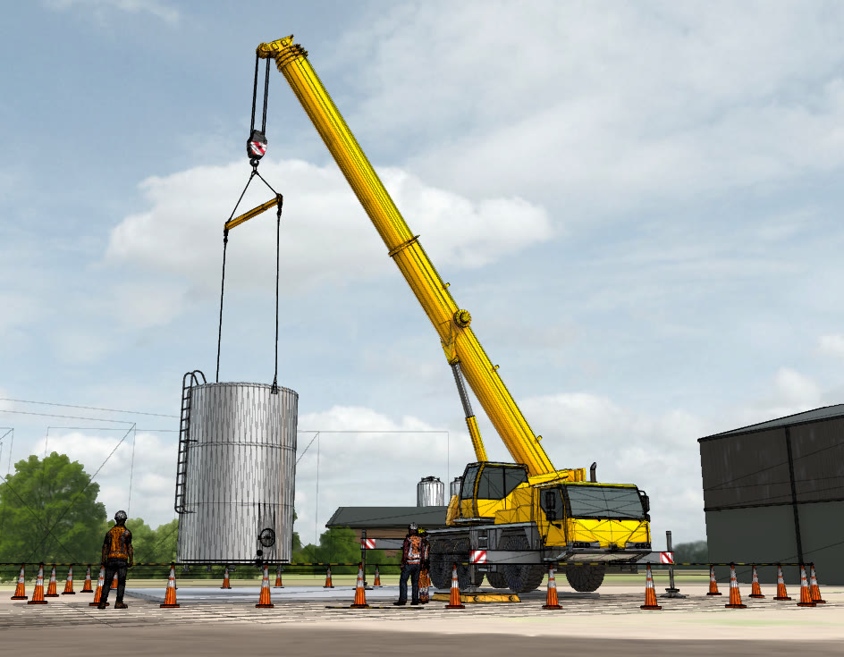
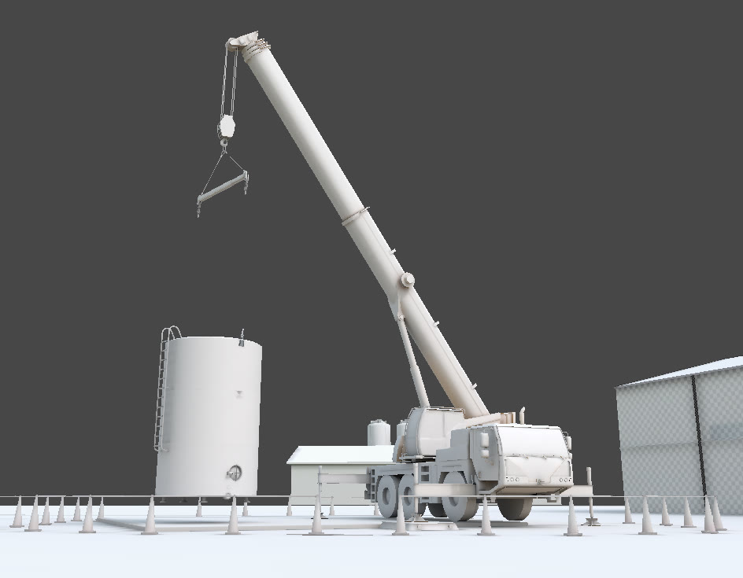
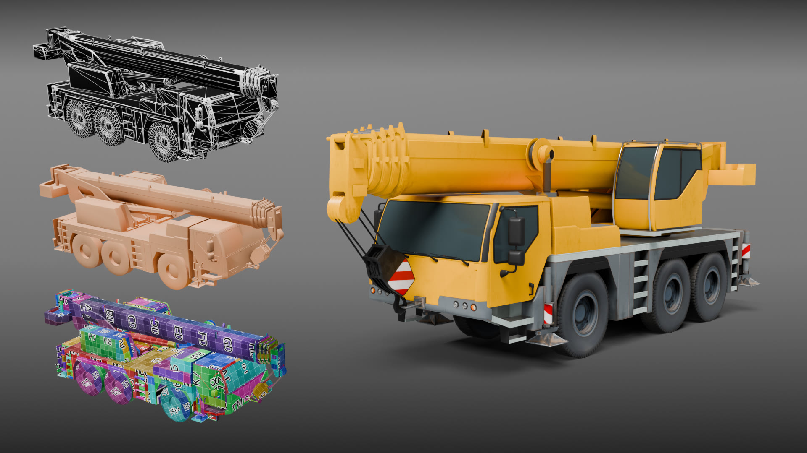

VR training · environment and asset work
The training covers hazardous-energy safety and the framework used to identify and control energy sources on a site. Trainees work through hazard scenarios in a headset rather than off a slide deck or filling in forms.
I built the entire environment, from layout to modelling and lighting.
The scene is a controlled lift: a tank on the hook, an exclusion zone in cones and tape, and spotters positioned where the trainee has to notice them. The scenario has to be readable according to the placement of the trainee, accounting for any possible movement or change of spatial location.
The lighting is flat and even on purpose. A stronger key would throw the exclusion zone into shadow and cost the trainee the thing they are being asked to spot.



The hero prop for the scene, modelled from reference of a Liebherr LTM class all-terrain crane.
